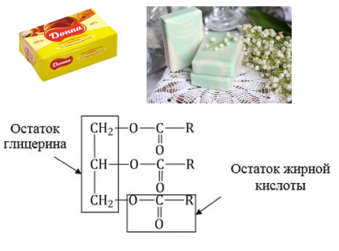

Жиры – это сложные эфиры, образованные глицерином и высшими одноосновными карбоновыми кислотами (жирными кислотами). Жиры содержатся во всех растениях и животных. Животные жиры (бараний, свиной, говяжий и т.п.), как правило, являются твердыми веществами с невысокой температурой плавления (исключение — рыбий жир). Они состоят главным образом из триглицеридов предельных кислот. Растительные жиры (подсолнечное масло, соевое, хлопковое и др.) – жидкости (исключение — кокосовое масло). В состав этих триглицеридов входят остатки непредельных кислот. Жидкие жиры превращают в твердые путем реакции гидрогенизации (гидрирования). При этом водород присоединяется по двойной связи, содержащейся в углеводородном радикале молекул масел .
Маргарин — пищевой жир, состоит из смеси гидрогенизированных масел (подсолнечного, кукурузного, хлопкого и др.), животных жиров, молока и вкусовых добавок (соли, сахара, витаминов и др.).
Натриевые соли — твердые мыла, калиевые — жидкие. Реакция щелочного гидролиза жиров, и вообще всех сложных эфиров, называется также омылением.

"Химия - интересная наука" - Место, где вы можете получить теоритическую и практичесткую информацию о замечательной науке - химии.